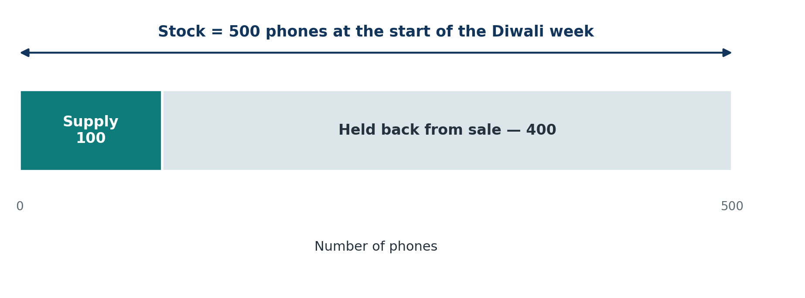
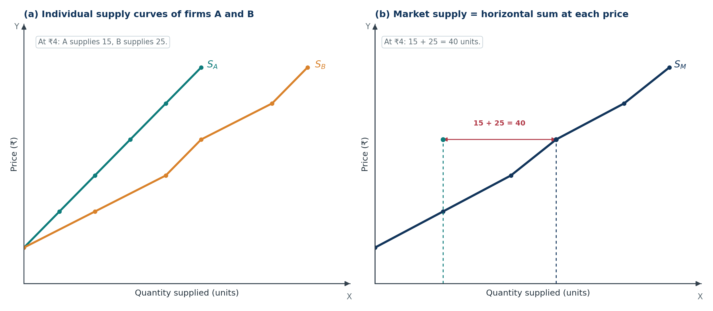
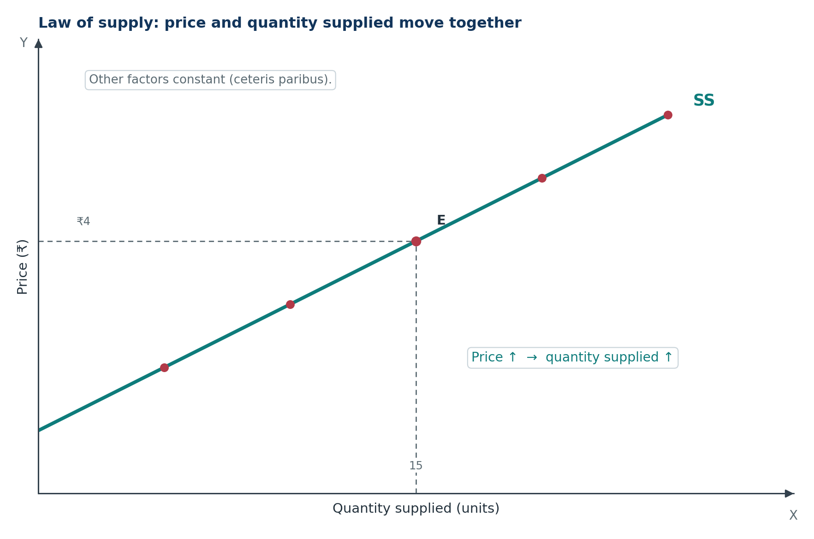
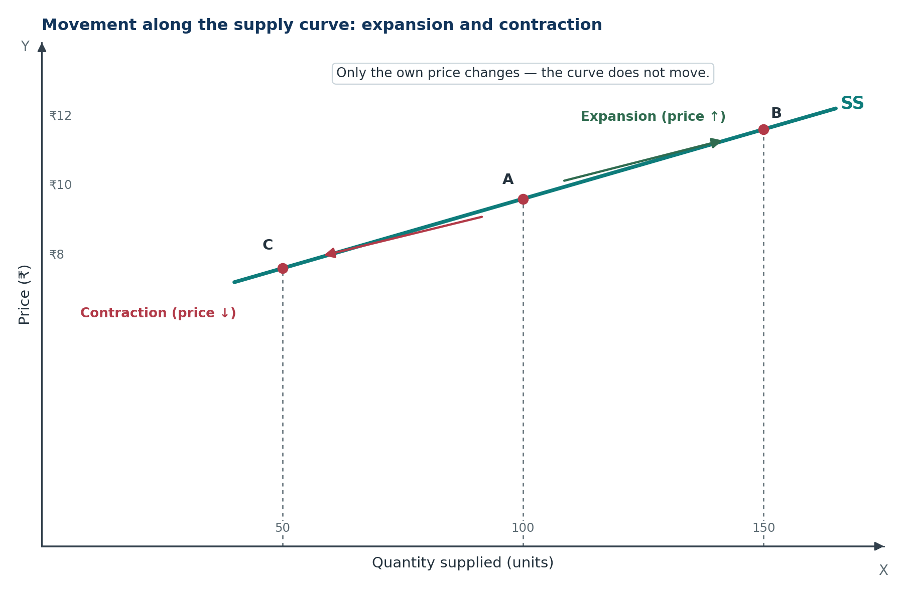
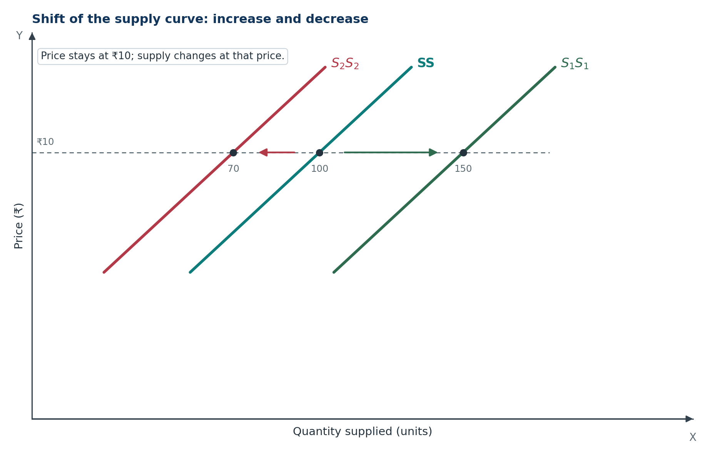
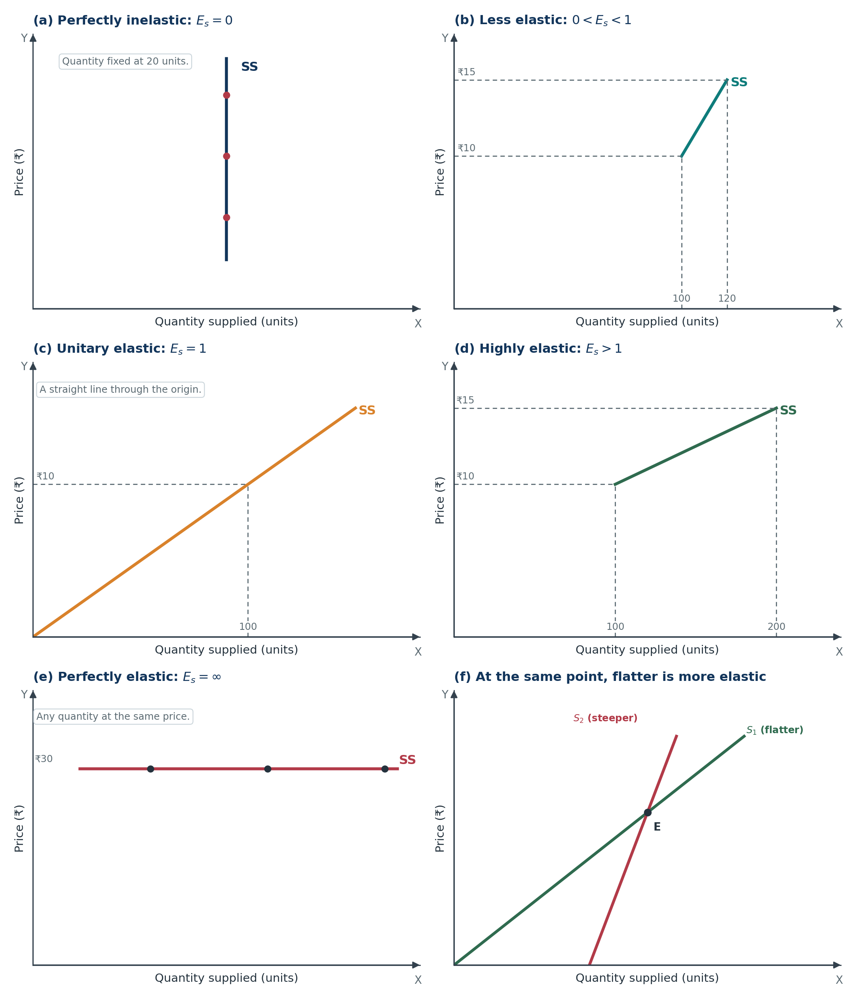
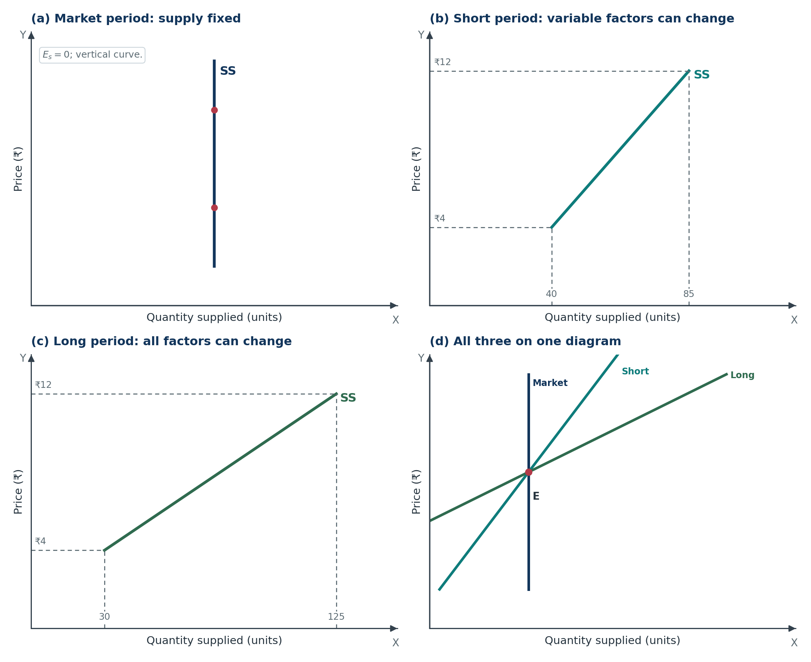

Microeconomics · Class 11Chapter 9Notes + quick revision
Supply
Supply is the seller's side of the market. Learn why a higher price usually brings more to the mandi, why stock is not supply, and how to tell a movement along the curve from a shift of the whole curve.
Chapter at a glance
Nine stops: from the meaning of supply to elasticity numericals. Tap a card to jump straight in.
The one-line idea: supply is the quantity a firm is willing and able to sell at a given price in a given period; price and quantity supplied move in the same direction, and anything that changes costs or profitability shifts the whole curve.
The core question: why does a farmer bring more tomatoes to the mandi when the price rises, and why does the same farmer sometimes bring less even at a high price?
Key Terms — Read These First
The words that carry marks. Read them once now, then test yourself after the chapter.
- Supply
- The quantity of a commodity a firm is willing and able to offer for sale at a given price during a given period of time.
- Stock
- The total quantity of a commodity available with a firm at a particular point of time.
- Individual supply
- The quantity one producer is willing to sell at various prices during a given period.
- Market supply
- The sum of the quantities all producers are willing to sell at various prices; also called industry supply.
- Supply schedule
- A tabular statement showing quantities supplied at various prices during a given period.
- Supply curve
- A graphical representation of a supply schedule.
- Law of supply
- The direct relationship between price and quantity supplied, other factors remaining constant.
- Ceteris paribus
- “Other things remaining the same” — the assumption that only the variable under study changes.
- Expansion in supply
- A rise in quantity supplied caused by a rise in the good's own price; an upward movement along the same curve.
- Contraction in supply
- A fall in quantity supplied caused by a fall in the good's own price; a downward movement along the same curve.
- Increase in supply
- A rise in supply at the same price caused by a favourable non-price factor; a rightward shift of the curve.
- Decrease in supply
- A fall in supply at the same price caused by an unfavourable non-price factor; a leftward shift of the curve.
- Supply function
- The functional relationship between quantity supplied and the factors that influence it.
- Price elasticity of supply
- The degree of responsiveness of quantity supplied to a change in price.
- Perfectly inelastic supply
- Supply does not change when price changes; Es = 0; vertical curve.
- Less elastic supply
- Percentage change in quantity supplied is less than the percentage change in price; 0 < Es < 1.
- Unitary elastic supply
- Percentage change in quantity supplied equals the percentage change in price; Es = 1.
- Highly elastic supply
- Percentage change in quantity supplied is more than the percentage change in price; Es > 1.
- Perfectly elastic supply
- Producers will supply any quantity at the same price; Es = ∞; horizontal curve.
- Market period
- A very short period in which supply cannot be changed in response to a change in demand; Es = 0.
- Short period
- A period in which output can be changed by varying only the variable factors of production.
- Long period
- A period in which output can be changed by varying all factors of production, including plant and machinery.
Meaning of Supply and Stock
The idea of this section. Supply is not “how much exists.” It is “how much a seller is willing and able to part with, at a price, over a period of time.”
1.1 What supply means
Definition. Supply is the quantity of a commodity that a firm is willing and able to offer for sale at a given price during a given period of time.
Five elements are packed into that definition:
- Willingness. The seller must want to sell the good.
- Ability. The seller must actually have the good, or be able to produce it. A wish to sell 1,000 cars without a factory is not supply.
- A price. Supply is always stated at a price. “The shop supplies 100 phones” is incomplete; “the shop supplies 100 phones at ₹20,000 each” is a supply statement.
- A period of time. Supply is per day, per week, per season, or per year. Without a time unit, the number has no meaning.
- A flow. Because supply is measured over a period, it is a flow concept, not a stock.
In simple words. Supply is the part of the seller's stock that the seller is ready to release into the market at the going price.
Example. A mobile shop has 500 phones in its godown before Diwali. The owner is willing to sell 100 phones at ₹20,000 each during the Diwali week. The stock is 500 phones. The supply is 100 phones at ₹20,000 per phone during that week.
Supply is a desired quantity, not actual sales. If buyers purchase only 80 of the 100 phones offered, supply was still 100. The remaining 20 are unsold stock. Supply records what sellers planned to offer, not what buyers chose to take.
1.2 Supply versus stock
Definition. Stock is the total quantity of a particular commodity available with a firm at a particular point of time.
| Basis | Supply | Stock |
|---|---|---|
| Meaning | Quantity a firm is willing and able to offer for sale at a given price during a given period | Total quantity available with the firm at a particular point of time |
| Time | Relates to a period; a flow concept | Relates to a point of time; a stock concept |
| Price | Always related to price; changes as price changes | Not related to price; it is a fixed quantity at that moment |
| Size | Supply is the part of stock offered for sale | Stock is the whole quantity available |
| Example | 30 tonnes of sugar offered at ₹37 per kg | 50 tonnes of sugar lying in the godown |
The relationship. Stock is the reservoir; supply is the tap. A seller cannot offer more than the stock available at that moment, so stock is normally greater than or equal to supply. Over a longer period, fresh production can add to stock, so the comparison must always be made for the same point or period.
Common mistake. “Supply and stock are the same because both are quantities of the good.” No. Stock is what exists; supply is what is offered at a price over time. A godown full of grain has a large stock but may have zero supply if the owner refuses to sell at the current price.
A useful test. Ask two questions: At what price? and Over what period? If neither can be answered, the number is probably stock, not supply.

What to notice. The bar for stock is longer than the bar for supply. The difference is not “waste” — it is the part held back, perhaps because the seller expects a higher price later, or because those phones are reserved for another market.
1.3 Supply versus demand
| Basis | Demand | Supply |
|---|---|---|
| Meaning | Quantity a consumer is willing and able to purchase at a given price during a given period | Quantity a firm is willing and able to offer for sale at a given price during a given period |
| Decision-maker | Consumer or buyer | Producer, firm or seller |
| Action | Wants to buy | Wants to sell |
| Curve | Usually slopes downward | Usually slopes upward |
| Price–quantity relation | Inverse | Direct |
Both concepts share the same discipline: willingness must be backed by ability, and the quantity must be tied to a price and a time period.
- Q1. Define supply. Why is it called a flow concept?
- Q2. A trader has 800 kg of basmati rice in stock. He is willing to sell 250 kg at ₹90 per kg this week. Identify the stock and the supply.
- Q3. Why can supply never be greater than stock at a point of time?
Show answers
- Supply is the quantity of a commodity a firm is willing and able to offer for sale at a given price during a given period. It is a flow concept because it is measured over a period of time, not at a single instant.
- Stock = 800 kg. Supply = 250 kg at ₹90 per kg during the week.
- At a given point of time, the seller can offer only what is actually available. Supply is the part of stock released for sale, so it cannot exceed the stock on hand. Over a longer period, fresh production can increase stock.
Individual and Market Supply
The idea of this section. One shop's willingness is individual supply. Add up every shop at each price and you get market supply — not by adding curves vertically, but by adding quantities horizontally.
2.1 Individual supply
Definition. Individual supply is the quantity of a commodity that a single producer is willing and able to sell at various prices during a given period of time.
It answers a micro question: At ₹10, how many pens will this one factory offer? At ₹12, how many? The answers form the factory's individual supply schedule.
2.2 Market supply
Definition. Market supply is the total quantity of a commodity that all producers in the market are willing and able to sell at various prices during a given period of time. It is also called industry supply.
Market supply is the horizontal sum of individual supplies.
The addition is done at each price: take the quantity supplied by every firm at ₹10, add them; then repeat at ₹12, and so on. This is why the process is called horizontal summation — quantities are added along the horizontal (quantity) axis.
Common mistake. Adding the prices of the two firms, or adding the curves vertically. Market supply adds quantities at the same price, not prices at the same quantity.
2.3 The individual supply schedule
Definition. An individual supply schedule is a tabular statement showing the various quantities of a commodity that a single producer is willing to sell at various prices during a given period.
| Price (₹) | Quantity supplied by firm A (units) |
|---|---|
| 1 | 0 |
| 2 | 5 |
| 3 | 10 |
| 4 | 15 |
| 5 | 20 |
| 6 | 25 |
The table shows the law of supply at work: as the price rises from ₹1 to ₹6, firm A's quantity supplied rises from 0 to 25 units. At ₹1, the firm supplies nothing — the price does not cover its cost.
2.4 The market supply schedule
Definition. A market supply schedule is a tabular statement showing the various quantities of a commodity that all producers are willing to sell at various prices during a given period.
| Price (₹) | Firm A: SA (units) | Firm B: SB (units) | Market supply: SM = SA + SB (units) |
|---|---|---|---|
| 1 | 0 | 0 | 0 |
| 2 | 5 | 10 | 15 |
| 3 | 10 | 20 | 30 |
| 4 | 15 | 25 | 40 |
| 5 | 20 | 35 | 55 |
| 6 | 25 | 40 | 65 |
At ₹4, firm A supplies 15 units and firm B supplies 25 units, so the market supplies 40 units. At ₹6, the market supplies 25 + 40 = 65 units.
2.5 The supply curve
Definition. A supply curve is a graphical representation of a supply schedule. It shows the quantity supplied at each price, with price on the vertical axis and quantity on the horizontal axis.

What to notice. Both curves slope upward. The market curve is not a copy of one firm's curve; it is built point by point from the last column of the market schedule. In this example it is flatter than either individual curve because each price now corresponds to a much larger total quantity.
2.6 Slope of the supply curve
The slope measures how steeply price changes as quantity changes:
A steep curve has a large ΔP for a small ΔQ. A flat curve has a small ΔP for a large ΔQ. Slope is useful for drawing, but it is not the same as elasticity. Elasticity also depends on the price and quantity at the point being measured:
This distinction becomes important in Section 6.
- Q1. Define individual supply and market supply.
- Q2. At ₹5, firm A supplies 20 units and firm B supplies 35 units. What is market supply at ₹5?
- Q3. Why is market supply obtained by horizontal summation rather than vertical summation?
Show answers
- Individual supply is the quantity one producer is willing to sell at various prices during a given period. Market supply is the total quantity all producers are willing to sell at various prices during the same period.
- Market supply = 20 + 35 = 55 units.
- Because at a given price, each firm offers a certain quantity, and the market quantity is the sum of those quantities. Horizontal summation adds quantities at the same price. Vertical summation would add prices at the same quantity, which has no economic meaning here.
Determinants and the Supply Function
The idea of this section. Supply responds to price, but price is not the only lever. Costs, technology, taxes, the prices of other goods and the seller's own goals all move the whole curve.
3.1 Price of the given commodity
This is the own price — the price of the good being supplied.
- When the own price rises, quantity supplied rises.
- When the own price falls, quantity supplied falls.
Reason. A higher price, with costs unchanged, widens the profit margin. The seller wants to sell more. A lower price squeezes the margin, so the seller holds back.
This is the only determinant that causes a movement along the supply curve. All the other determinants in this section cause a shift of the curve.
Example. When tomatoes sell at ₹40 per kg in the mandi instead of ₹20, farmers bring larger crates from the surrounding villages. When the price crashes to ₹8, some farmers do not even recover transport costs and stop bringing tomatoes.
3.2 Prices of other goods
A firm usually has limited land, labour, machines or shelf space. If another good becomes more profitable, the firm shifts those resources toward it, and the supply of the given good falls.
- Rise in the price of other goods → supply of the given good falls (left shift).
- Fall in the price of other goods → supply of the given good rises (right shift).
Example. A farmer has one field. If the price of wheat rises sharply, the farmer may grow wheat instead of rice. The supply of rice falls at every price. The same logic applies to a factory that can produce either shirts or trousers, or a shop that can stock either chips or biscuits.
Careful. This is about goods that compete for the same resources. A rise in the price of a complementary product made jointly — say, leather and meat from the same animal — can increase the supply of both. For Class 11, the standard case is competing uses of resources.
3.3 Prices of factors of production or inputs
Inputs include labour, raw material, power, rent, transport and machinery.
- Rise in input prices → cost of production rises → profit margin falls → supply falls (left shift).
- Fall in input prices → cost falls → profit margin rises → supply rises (right shift).
Example. A biscuit factory uses maida, sugar, palm oil and electricity. If all four become costlier, the factory supplies fewer biscuits at every price. If a new power contract cuts electricity bills, it can supply more at every price.
3.4 State of technology
Technology is the recipe for turning inputs into output.
- Improved technology → lower cost per unit and/or more output from the same inputs → supply rises (right shift).
- Outdated or complex technology → higher cost, more wastage → supply falls (left shift).
Example. A dairy installs cold-storage and automatic packing. Less milk spoils, so more milk and paneer reach the market at every price. A power loom that breaks down repeatedly has the opposite effect.
3.5 Government policy: taxes and subsidies
- An increase in tax (for example, GST or excise duty) raises the cost of production and reduces the profit margin → supply falls (left shift).
- A decrease in tax, a tax concession or a subsidy lowers the effective cost → supply rises (right shift).
Example. A subsidy on fertiliser lowers the farmer's cost and encourages more output. A steep hike in excise duty on a car raises the showroom cost and reduces the quantity the manufacturer is willing to supply at each price.
Exam point. A tax is a cost to the seller, so it shifts supply left. A subsidy is a negative cost, so it shifts supply right. Do not confuse either with a change in the good's own price, which only moves along the curve.
3.6 Goals or objectives of the firm
Most firms aim at profit maximisation, so they supply more only when the price covers their cost and yields a satisfactory margin. But some firms pursue other goals:
- Market share: a firm may supply more at a lower price to capture a large market.
- Reputation and prestige: a firm may keep supplying a prestigious product even when the margin is thin.
- Social or strategic goals: a firm may maintain supply to keep customers, workers or suppliers attached.
When the goal changes from profit maximisation to sales maximisation, supply can rise even at the same price. This is a shift caused by a non-price factor.
3.7 Three additional determinants of market supply
Market supply includes everything that affects individual supply, plus three factors that appear only at the market level:
(a) Number of firms in the market. More firms → more sellers at every price → market supply rises (right shift). If firms leave the industry because of losses, market supply falls (left shift).
(b) Future expectation regarding price. If sellers expect the price to rise next month, they may hold back stock today to sell later at a higher price. Current supply falls (left shift). If they expect the price to fall, they rush to sell now, so current supply rises (right shift).
(c) Means of transportation and communication. Better roads, railways, cold chains, ports and digital order systems move goods from producer to market quickly and cheaply. Market supply rises and becomes more reliable. Poor transport, strikes or damaged roads reduce the quantity that actually reaches the market.
3.8 The supply function
Definition. The supply function shows the functional relationship between the quantity supplied of a commodity and the factors that influence it.
| Symbol | Meaning |
|---|---|
| Sx | Supply of the given commodity x |
| Px | Price of the given commodity x |
| Po | Price of other goods |
| Pf | Prices of factors of production or inputs |
| St | State of technology |
| T | Taxation policy (taxes and subsidies) |
| G | Goals or objectives of the firm |
| F | Future expectation regarding the price of x |
| M | Means of transportation and communication |
| N | Number of firms in the market |
Memory trick. Individual supply has six determinants: P-P-P-T-T-G (Price, Price of other goods, Price of factors, Technology, Taxes, Goals). Market supply adds F-M-N (Future expectation, Means of transport, Number of firms): 6 + 3 = 9.
3.9 Which way does the curve shift?
| Change in the determinant | Effect on supply | Direction of shift |
|---|---|---|
| Own price rises | Quantity supplied rises | Movement up along the curve |
| Own price falls | Quantity supplied falls | Movement down along the curve |
| Price of other goods rises | Supply of the given good falls | Left |
| Price of other goods falls | Supply of the given good rises | Right |
| Input prices rise | Supply falls | Left |
| Input prices fall | Supply rises | Right |
| Technology improves | Supply rises | Right |
| Technology becomes outdated | Supply falls | Left |
| Tax rises | Supply falls | Left |
| Tax falls or subsidy rises | Supply rises | Right |
| Goal shifts toward sales maximisation | Supply rises | Right |
| Number of firms rises | Market supply rises | Right |
| Sellers expect a future price rise | Current supply falls | Left |
| Sellers expect a future price fall | Current supply rises | Right |
| Transport and communication improve | Market supply rises | Right |
- Q1. List the six determinants of individual supply.
- Q2. A tyre factory's rubber and power costs rise. What happens to the supply curve of tyres?
- Q3. Why does a rise in the price of wheat reduce the supply of rice?
Show answers
- Own price of the good; prices of other goods; prices of factors of production; state of technology; taxes and subsidies; goals of the firm.
- Higher input costs reduce the profit margin at every price, so the supply curve of tyres shifts to the left.
- Wheat and rice compete for the same land, water and labour. A higher wheat price makes wheat more profitable, so the farmer shifts resources from rice to wheat. At every price of rice, less rice is supplied, so the rice supply curve shifts left.
Law of Supply
The idea of this section. The law of supply is a one-directional statement: change the price, hold everything else constant, and quantity supplied moves the same way.
4.1 Statement of the law
Definition. The law of supply states that, other things remaining constant (ceteris paribus), the quantity supplied of a commodity rises when its price rises and falls when its price falls.
The relationship is direct or positive: price and quantity supplied move in the same direction.

What to notice. The curve is drawn on the assumption that only price changes. If a cost, a tax or the technology changes, the whole curve moves — that is a different story, taken up in Section 5.
4.2 Assumptions of the law
The phrase ceteris paribus hides five assumptions:
- The prices of other goods remain constant.
- The state of technology does not change.
- The prices of factors of production remain constant.
- The taxation policy remains unchanged.
- The goals of the producer remain unchanged.
For market supply, three more conditions are added: the number of firms, future price expectations and transport conditions remain constant. If any of these changes, the law of supply may appear to fail — but what has actually happened is a shift of the curve, not a violation of the law.
4.3 Four features of the law
- It is a qualitative statement. It tells the direction of change, not the exact amount. “Supply rises” does not say by how much.
- It does not establish a proportional relationship. A 10% rise in price need not produce a 10% rise in quantity supplied. That is a question for elasticity.
- It is one-sided. It explains the effect of price on supply, not the effect of supply on price.
- It holds only when other factors are constant. A simultaneous change in costs, technology or taxes can obscure the price–quantity relationship.
Exam point. If a question says “price rises and supply falls,” the law of supply is not necessarily wrong. Check whether a non-price factor changed at the same time. If it did, the curve shifted, and the observed fall is a shift effect, not a movement along the curve.
4.4 Why does the law of supply hold?
(a) Profit motive. The basic aim of a producer is to earn profit. When the price rises and costs stay the same, the profit per unit rises. Producers expand output to earn more. When the price falls, the margin shrinks and producers cut back.
(b) Change in the number of firms. A higher price attracts new firms into the industry, especially in markets with low entry barriers. More firms mean more market supply. A falling price drives out marginal firms, reducing market supply.
(c) Change in stock. Sellers hold inventories. When the price rises, they release more from stock to capture the higher price. When the price falls, they hold back stock, hoping for a recovery. This is particularly visible in commodity trading — onions, pulses, edible oils and metals.
A fourth reason, for a competitive firm. A firm supplies only if the price covers its variable cost. Its supply curve is the rising portion of the marginal cost curve above the minimum average variable cost. At a higher price, the firm is willing to produce more because additional units become profitable. This links Chapter 9 to the cost and producer-equilibrium chapters.
4.5 Exceptions to the law of supply
The law is not a universal law of nature. It can fail in the following cases:
- Agricultural goods. In a single season, output is largely fixed by weather, land and the harvest. If a poor monsoon cuts production, farmers cannot increase supply even when the price rises. Across years, higher prices do encourage more planting, so the exception is strongest in the short run.
- Perishable goods. Vegetables, fruits, milk and flowers cannot be stored for long. If the price falls, sellers may still rush to sell before the produce spoils. Supply can rise even as the price falls. The same happens with a fisherman who must sell the day's catch.
- Rare articles. The supply of a rare painting, an antique, a limited-edition watch or a piece of heritage land is fixed. No price can call forth more of it. The supply curve is vertical — perfectly inelastic.
- Economically backward countries. In a poor economy, resources, infrastructure and technology may be so scarce that a higher price cannot pull forth more output. Supply stays stuck despite the price signal.
- Future price expectations (a caveat). If sellers expect the price to rise sharply later, they may withhold supply today even at a high current price. If they expect a crash, they may dump stock today even at a low price. This does not repeal the law; it changes the current supply curve through the expectations determinant.
How to answer an exception question. Name the exception, give one concrete example, and state the reason in one line. For example: “Perishable goods such as tomatoes may be sold even at falling prices because sellers cannot store them; holding back would mean a total loss.”
- Q1. State the law of supply and its five assumptions.
- Q2. The price of onions rises, but farmers bring less to the mandi because they expect prices to rise further next week. Does this violate the law of supply? Explain.
- Q3. Why is the law of supply called a qualitative statement?
Show answers
- Other things remaining constant, quantity supplied rises with a rise in price and falls with a fall in price. Assumptions: prices of other goods constant; technology constant; input prices constant; taxation policy constant; goals of the producer constant.
- No. The law holds price and other factors constant. Here a non-price factor — future price expectation — has changed. Farmers are withholding current supply, so the supply curve has shifted left. The observed fall is a shift, not a movement along the curve.
- Because it states only the direction of the relationship (price up, supply up), not the magnitude or proportion of the change. Elasticity measures the magnitude.
Movement Along versus Shift of the Supply Curve
The idea of this section. One question decides everything: Did the good's own price change, or did something else change? Own price → move along the curve. Anything else → shift the curve.
5.1 Change in quantity supplied versus change in supply
Definition. A change in quantity supplied occurs when quantity supplied changes because of a change in the commodity's own price, other factors remaining constant. It is shown by a movement along the same supply curve.
Definition. A change in supply occurs when supply changes because of a factor other than the commodity's own price, the own price remaining constant. It is shown by a shift of the supply curve to a new position.
| Basis | Change in quantity supplied | Change in supply |
|---|---|---|
| Cause | Change in the good's own price | Change in a non-price determinant |
| Curve | Movement along the same curve | Shift to a new curve |
| Direction | Upward (expansion) or downward (contraction) | Rightward (increase) or leftward (decrease) |
| Own price | Changes | Constant |
| Example | Close-Up toothpaste supply rises because its price rises | Close-Up supply falls because a tax on toothpaste rises |
5.2 Movement along the supply curve: expansion and contraction
Expansion in supply (also called extension in supply or increase in quantity supplied) is a rise in quantity supplied caused by a rise in the good's own price, other factors constant. It is an upward movement along the same curve.
Contraction in supply (also called decrease in quantity supplied) is a fall in quantity supplied caused by a fall in the good's own price, other factors constant. It is a downward movement along the same curve.
| Point | Price (₹) | Quantity supplied (units) | Movement |
|---|---|---|---|
| A | 10 | 100 | Starting point |
| B | 12 | 150 | Expansion: price ↑, quantity ↑ |
| C | 8 | 50 | Contraction: price ↓, quantity ↓ |

What to notice. The arrows stay on the same curve. The only thing that changed is the good's own price. If a newspaper headline says “tomato prices jump, farmers bring more,” this is the diagram to draw.
5.3 Shift of the supply curve: increase and decrease
Increase in supply is a rise in supply at the same price caused by a favourable change in a non-price factor. The curve shifts right from SS to S1S1.
Decrease in supply is a fall in supply at the same price caused by an unfavourable change in a non-price factor. The curve shifts left from SS to S2S2.
| Point | Price (₹) | Quantity supplied (units) | Shift |
|---|---|---|---|
| A | 10 | 100 | Original curve SS |
| B | 10 | 150 | Increase: same price, more supplied; curve shifts right |
| C | 10 | 70 | Decrease: same price, less supplied; curve shifts left |

What to notice. The price axis stays at ₹10. The change is in the quantity supplied at that price, which is exactly what a shift means. The rightward curve is labelled S1S1; the leftward curve is S2S2.
5.4 The comparison tables
Movement versus shift
| Basis | Movement along the supply curve | Shift of the supply curve |
|---|---|---|
| Meaning | Quantity supplied changes due to a change in own price, other factors constant | Supply changes due to a change in a non-price factor, own price constant |
| Effect on curve | Same curve; upward expansion or downward contraction | New curve; rightward increase or leftward decrease |
| Reason | Rise or fall in the price of the given commodity | Change in input prices, taxes, technology, number of firms, expectations, transport or goals |
Four terms, side by side
| Basis | Expansion | Increase | Contraction | Decrease |
|---|---|---|---|---|
| Meaning | Quantity supplied rises because the own price rises | Supply rises because a non-price factor becomes more favourable, at the same price | Quantity supplied falls because the own price falls | Supply falls because a non-price factor becomes less favourable, at the same price |
| Price | ₹10 → ₹12 | ₹10 → ₹10 | ₹12 → ₹10 | ₹12 → ₹12 |
| Quantity | 100 → 150 | 100 → 150 | 150 → 100 | 150 → 100 |
| Curve | Upward movement along the same curve | Rightward shift of the curve | Downward movement along the same curve | Leftward shift of the curve |
| Reason | Rise in own price | Fall in input prices, fall in tax, better technology, more firms | Fall in own price | Rise in input prices, rise in tax, outdated technology, fewer firms |
Memory line. Expansion and contraction are movements; increase and decrease are shifts. If the price changed, it is a movement. If the price did not change, it is a shift.
5.5 Eight causes of a rightward shift
The supply curve shifts right when a non-price factor makes production more profitable or easier:
- A fall in the price of other goods (resources move back to this good).
- A fall in the price of factors of production or inputs.
- Advanced and improved technology.
- A favourable tax policy — lower taxes or a new subsidy.
- A goal of sales maximisation rather than pure profit maximisation.
- An increase in the number of firms in the market.
- An expectation of a fall in prices in the future (sell now before the price drops).
- An improvement in the means of transport and communication.
5.6 Eight causes of a leftward shift
The supply curve shifts left when a non-price factor makes production less profitable or harder:
- A rise in the price of other goods (resources move away from this good).
- A rise in the price of factors of production or inputs.
- Complex, outdated or degraded technology.
- An unfavourable tax policy — higher taxes or withdrawal of a subsidy.
- A goal of profit maximisation that raises the price sellers need before they expand supply.
- A decrease in the number of firms in the market.
- An expectation of a rise in prices in the future (hold stock back for later).
- Poor means of transport and communication.
The direction rule in one line. Anything that lowers cost or raises profitability at the same price shifts supply right. Anything that raises cost or lowers profitability at the same price shifts supply left.
5.7 How to identify the change in an exam
Use a three-step check:
- Did the good's own price change? If yes, it is a movement along the curve. If no, go to step 2.
- Did a non-price determinant change? If yes, it is a shift. Name the determinant.
- Which direction? More supply at the same price → right shift (increase). Less supply at the same price → left shift (decrease).
Worked example. “The price of diesel falls, and tomato growers bring more tomatoes to the market at every price.” The own price of tomatoes has not changed. Diesel is an input for transport, so a fall in its price lowers cost. Supply shifts right — an increase in supply.
- Q1. Distinguish between a movement along the supply curve and a shift of the supply curve.
- Q2. The price of sugar rises from ₹40 to ₹45 per kg, and a factory supplies more sugar. Is this expansion or increase?
- Q3. A fall in input prices raises supply at the same price. Which way does the curve shift, and what is the change called?
Show answers
- A movement along the curve is caused by a change in the good's own price; quantity supplied changes while the curve stays put. A shift is caused by a change in a non-price determinant; the whole curve moves to a new position at the same price.
- Expansion in supply. The own price of sugar has risen, so the factory moves upward along its existing supply curve.
- The curve shifts right. At every price, more is supplied because costs are lower. This is called an increase in supply.
Price Elasticity of Supply
The idea of this section. The law of supply says the direction. Elasticity says the strength: a small price change may bring a huge response, or almost none.
6.1 Meaning
Definition. Price elasticity of supply is the degree of responsiveness of the quantity supplied of a commodity to a change in its price.
Two properties:
- It is positive. Price and quantity supplied move in the same direction, so the numerator and denominator have the same sign. (If you calculate with new-minus-old values, both are negative in a price fall, so the ratio is still positive.)
- It is a unit-free measure. The percentage changes cancel the units, so Es is a pure number. You can compare the elasticity of pens with the elasticity of cement.
6.2 The percentage method
The percentage method (also called the proportionate method) uses initial values as the base:
where Q is the initial quantity supplied, ΔQ is the change in quantity supplied (new − old), P is the initial price and ΔP is the change in price (new − old).
Why multiply by P/Q? Because percentage changes are not the same as absolute changes. A 10-unit rise means something very different when the starting quantity is 20 and when it is 2,000. The ratio P/Q converts the slope into a percentage response.
6.3 Worked numericals
| # | Given | Working | Answer |
|---|---|---|---|
| 1 | Quantity falls 400 → 300 when price falls ₹60 → ₹58 | ΔQ = −100, ΔP = −2; Es = (−100 ÷ −2) × (60 ÷ 400) = 50 × 0.15 | 7.5 — highly elastic |
| 2 | Quantity falls 100 → 50 when price falls ₹15 → ₹10 | ΔQ = −50, ΔP = −5; Es = (−50 ÷ −5) × (15 ÷ 100) = 10 × 0.15 | 1.5 — highly elastic |
| 3 | Quantity rises 600 → 800 when price rises ₹4 → ₹5 | ΔQ = 200, ΔP = 1; Es = (200 ÷ 1) × (4 ÷ 600) = 800 ÷ 600 | 1.33 — highly elastic |
| 4 | At ₹8, supply is 200 units. Price rises to ₹10 and Es = 1.5. Find the new quantity. | 1.5 = (ΔQ ÷ 2) × (8 ÷ 200) = 0.02ΔQ, so ΔQ = 75 | 275 units (200 + 75) |
| 5 | Total revenue is ₹400 at ₹2 per unit. At ₹3, quantity supplied is 300 units. | At ₹2, Q = 400 ÷ 2 = 200; ΔQ = 100, ΔP = 1; Es = (100 ÷ 1) × (2 ÷ 200) | 1 — unitary elastic |
| 6 | X and Y have equal Es. X rises 400 → 500 when its price rises 20%. Y's price falls 8%. | %ΔQX = 25%, Es = 25 ÷ 20 = 1.25; %ΔQY = 1.25 × 8% | Y's supply falls by 10% |
| 7 | Supply function Sx = 6Px + 3. Find the price at which 27 units are supplied. | 27 = 6Px + 3, so 6Px = 24 | ₹4 (check: 6 × 4 + 3 = 27) |
Reading the answers. An elasticity above 1 means supply is highly responsive; exactly 1 means quantity and price change by the same percentage; below 1 means supply is less responsive. Example 6 is a proportion question: find Es from X, then apply the same elasticity to Y.
6.4 A checklist for numericals
- Write down the initial price and quantity. These are the denominators.
- Compute ΔQ and ΔP as new minus old. Keep the signs; they usually cancel.
- Substitute into Es = (ΔQ ÷ ΔP) × (P ÷ Q).
- If the answer is negative, check the arithmetic — elasticity of supply should be positive.
- Interpret the number: 0, between 0 and 1, 1, above 1, or infinity.
Common mistake. Using the new quantity or new price as the base. The percentage method uses the initial values. If the question specifies the “midpoint” or “arc” method, use averages instead — but the standard Class 11 method is the initial-value percentage method.
- Q1. Define price elasticity of supply and state its formula.
- Q2. Quantity supplied rises from 200 to 250 units when price rises from ₹20 to ₹22. Calculate Es.
- Q3. Why is price elasticity of supply always positive?
Show answers
- It is the degree of responsiveness of quantity supplied to a change in price: Es = %ΔQs ÷ %ΔP = (ΔQ ÷ ΔP) × (P ÷ Q).
- ΔQ = 50, ΔP = 2, so Es = (50 ÷ 2) × (20 ÷ 200) = 25 × 0.10 = 2.5. Supply is highly elastic.
- Because price and quantity supplied move in the same direction under the law of supply. A rise in price raises quantity supplied, and a fall in price lowers it, so the numerator and denominator always have the same sign.
Kinds, Observations and Time Period
The idea of this section. Five labels cover every supply curve, from a vertical line to a horizontal one. The time period is what usually decides which label fits.
7.1 The five kinds of price elasticity of supply
| Kind | Value of Es | Meaning | Shape of curve |
|---|---|---|---|
| Perfectly inelastic | Es = 0 | Quantity supplied does not change when price changes | Vertical, parallel to the price axis |
| Less elastic (relatively inelastic) | 0 < Es < 1 | Percentage change in quantity is less than the percentage change in price | Steep upward-sloping |
| Unitary elastic | Es = 1 | Percentage change in quantity equals the percentage change in price | Upward-sloping straight line through the origin |
| Highly elastic (relatively elastic) | Es > 1 | Percentage change in quantity is more than the percentage change in price | Flatter upward-sloping |
| Perfectly elastic | Es = ∞ | Any quantity is supplied at the same price | Horizontal, parallel to the quantity axis |
The same price rise, four different responses. In each row below, price rises from ₹10 to ₹15 — a 50% rise. Only the quantity response changes:
| Kind | Price (₹) | Supply (units) | Elasticity |
|---|---|---|---|
| Perfectly inelastic | 20 → 30 → 40 | 20 → 20 → 20 | Es = 0 |
| Less elastic | 10 → 15 | 100 → 120 | 20% ÷ 50% = 0.4 |
| Unitary elastic | 10 → 15 | 100 → 150 | 50% ÷ 50% = 1 |
| Highly elastic | 10 → 15 | 100 → 200 | 100% ÷ 50% = 2 |
| Perfectly elastic | 30 → 30 → 30 | 100 → 200 → 300 | Es = ∞ |
Perfectly inelastic supply. Supply is fixed. A rare painting, a fixed number of seats in a stadium for tonight's match, or a perishable harvest already picked cannot be increased whatever the price.
Perfectly elastic supply. At ₹30, producers will supply 100, 200 or 300 units — any quantity demanded. The curve is horizontal at ₹30. This is typical of a small producer facing a fixed market price, or of imports available at a fixed world price.

What to notice. The labels describe the responsiveness, not the direction. Every upward-sloping curve still obeys the law of supply; the difference is how strongly quantity reacts.
7.2 Two important observations
Observation 1 — any straight-line supply curve through the origin is unitary elastic. For a line through the origin, quantity is proportional to price: Q = kP. Then:
This is true whatever the angle of the line. A steep ray from the origin and a flat ray from the origin both have Es = 1 at every point. Do not judge elasticity by steepness alone when the curves pass through the origin.
Observation 2 — at the same point, the flatter curve is more elastic. If two supply curves pass through the same point, the flatter one has a smaller ΔP/ΔQ, so it has a larger ΔQ/ΔP. With the same P and Q, the flatter curve has the higher Es. The steeper curve is less elastic.
Important qualification. “Flatter means more elastic” is safe only when comparing curves at the same price–quantity point. Comparing a flat curve at a low quantity with a steep curve at a high quantity can give the wrong answer, because P/Q also changes. The origin rule and the same-point rule are the two safe shortcuts for exams.
7.3 Elasticity is not the same as slope
Slope is ΔP/ΔQ. Elasticity is (ΔQ/ΔP) × (P/Q). A curve can be steep and still highly elastic at a point if P/Q is large. A curve can be flat and still inelastic if P/Q is small. The slope is a property of the whole line; elasticity is a property of a point on the line (unless the line passes through the origin, in which case elasticity is constant).
7.4 Time period and supply
Time gives producers room to adjust. The longer the period, the more elastic the supply.
| Period | What can change | Elasticity | Shape |
|---|---|---|---|
| Market period (very short) | Nothing; harvest picked, capacity fixed, stock fixed | Es = 0, perfectly inelastic | Vertical |
| Short period | Only variable factors — labour, raw material, power, shifts | Between 0 and 1; more elastic than market period | Steep upward-sloping |
| Long period | All factors, including plant, machinery and land; new firms can enter | Es > 1, most elastic | Flatter upward-sloping |

What to notice. The same product can have different elasticities in different time frames. The supply of tomatoes is nearly fixed on a given morning, somewhat flexible over a season, and much more flexible over several years as farmers switch crops and build storage.
Exam line. “The longer the time period, the more elastic the supply, because producers can adjust more inputs and more firms can enter.”
- Q1. Name the five kinds of price elasticity of supply and give the value of Es for each.
- Q2. Price rises from ₹10 to ₹15 and supply rises from 100 to 120 units. Which kind of elasticity is this?
- Q3. Why is supply perfectly inelastic in the market period?
Show answers
- Perfectly inelastic (Es = 0); less elastic (0 < Es < 1); unitary elastic (Es = 1); highly elastic (Es > 1); perfectly elastic (Es = ∞).
- %ΔQ = 20%, %ΔP = 50%, so Es = 20 ÷ 50 = 0.4. Supply is less elastic.
- In the market period, so little time has passed that the quantity available cannot be changed. The harvest is fixed, the factory capacity is fixed and stock cannot be produced overnight. Whatever the price, sellers can offer only what they already have, so the supply curve is vertical.
Common Mistakes to Avoid
| Mistake | Correct idea |
|---|---|
| “Supply and stock mean the same thing.” | Stock is the total quantity available at a point of time; supply is the part offered at a price over a period. |
| “Supply is the same as actual sales.” | Supply is what sellers are willing and able to offer. Actual sales may be lower if buyers do not buy everything. |
| “Market supply is the vertical sum of individual curves.” | Market supply is the horizontal sum: quantities are added at each price. |
| “A change in price shifts the supply curve.” | A change in the good's own price causes a movement along the curve. Only a non-price determinant shifts it. |
| “Expansion and increase are the same.” | Expansion is a movement along the curve caused by a price rise; an increase is a rightward shift caused by a non-price factor. |
| “Contraction and decrease are the same.” | Contraction is a downward movement caused by a price fall; a decrease is a leftward shift caused by a non-price factor. |
| “A tax shifts supply right.” | A tax raises cost, so supply shifts left. A subsidy shifts supply right. |
| “A rise in the price of other goods raises the supply of this good.” | If the other good is more profitable, resources move toward it, so the supply of this good falls. |
| “The law of supply says supply always rises with price.” | The law holds only when other factors are constant. Expectations, perishability, fixed supply and resource shortages can produce exceptions. |
| “A steeper curve is always more elastic.” | At the same point, the flatter curve is more elastic. Slope and elasticity are not the same. |
| “All supply curves through the origin have different elasticities.” | Every straight-line supply curve through the origin has Es = 1, whatever its angle. |
| “Elasticity of supply can be negative.” | It is positive because price and quantity supplied move in the same direction. |
Recap, Formulas and Exam Practice
9.1 Chapter recap
- Supply is the quantity a firm is willing and able to offer at a given price over a given period. It is a flow concept.
- Stock is the total quantity available at a point of time. Supply is the part of stock offered for sale.
- Individual supply is one firm's supply; market supply is the horizontal sum of all firms' supplies at each price.
- The six determinants of individual supply are own price, prices of other goods, input prices, technology, taxes/subsidies and the goals of the firm. Market supply adds the number of firms, future price expectations and transport/communication.
- The law of supply states a direct relationship between price and quantity supplied, other things constant. It is qualitative, non-proportional and one-sided.
- Reasons for the law: profit motive, entry and exit of firms, and release or holding of stock.
- Exceptions: agricultural goods, perishable goods, rare articles and backward economies; future expectations can also make current supply move opposite to price.
- A change in own price causes a movement along the curve: expansion (up) or contraction (down).
- A change in a non-price factor causes a shift: increase (right) or decrease (left).
- Price elasticity of supply is Es = %ΔQs ÷ %ΔP = (ΔQ ÷ ΔP)(P ÷ Q). It is positive and unit-free.
- The five kinds are perfectly inelastic (0), less elastic (0 to 1), unitary (1), highly elastic (above 1) and perfectly elastic (infinity).
- A straight-line supply curve through the origin is unitary elastic. At the same point, the flatter curve is more elastic.
- Time period: market period Es = 0; short period more elastic; long period most elastic.
9.2 Formula sheet
| Concept | Formula or statement | Remember |
|---|---|---|
| Supply | Quantity willing and able to be sold at a price over a period | Flow concept |
| Stock | Total quantity available at a point of time | Stock concept |
| Market supply | SM = SA + SB + ⋯ | Horizontal summation |
| Supply function (individual) | Sx = f(Px, Po, Pf, St, T, G) | Six determinants |
| Supply function (market) | Sx = f(Px, Po, Pf, St, T, G, F, M, N) | Nine determinants |
| Law of supply | P ↑ ⇒ Qs ↑; P ↓ ⇒ Qs ↓ | Direct relation, ceteris paribus |
| Slope of supply curve | ΔP ÷ ΔQ | Not the same as elasticity |
| Price elasticity of supply | Es = %ΔQs ÷ %ΔP | Percentage method |
| Working formula | Es = (ΔQ ÷ ΔP) × (P ÷ Q) | Use initial P and Q |
| Perfectly inelastic | Es = 0 | Vertical curve |
| Less elastic | 0 < Es < 1 | Steep curve |
| Unitary elastic | Es = 1 | Straight line through origin |
| Highly elastic | Es > 1 | Flatter curve |
| Perfectly elastic | Es = ∞ | Horizontal curve |
| Market period | Es = 0 | Supply fixed |
| Long period | Most elastic | All factors variable |
Symbols: Qs = quantity supplied; P = price; Δ = change; Es = price elasticity of supply; Sx = supply of good x; the other symbols are defined in Section 3.8.
9.3 Exam-style questions
Very short answer (1 mark)
- Define supply.
- What is stock?
- What is market supply?
- State the law of supply.
- What is meant by expansion in supply?
- What is the value of Es for a perfectly inelastic supply curve?
- If a 10% rise in price raises supply by 20%, what is Es?
Short answer (3 marks)
- Distinguish between supply and stock.
- Distinguish between individual supply and market supply.
- Explain any two determinants of supply.
- Explain the difference between a movement along the supply curve and a shift of the supply curve.
- Why does the supply curve slope upward?
- State any three exceptions to the law of supply.
- Explain the effect of an improvement in technology on the supply curve.
- Calculate Es when quantity supplied rises from 100 to 150 units and price rises from ₹10 to ₹12.
Long answer (4–6 marks)
- Explain the law of supply with the help of a schedule and a diagram. State its assumptions.
- Explain the determinants of individual supply and market supply.
- Explain the distinction between expansion, contraction, increase and decrease in supply with tables and diagrams.
- Explain the meaning, formula and five kinds of price elasticity of supply.
- Explain how the time period affects the elasticity of supply.
Answer pointers
Very short answer
- The quantity of a commodity a firm is willing and able to offer for sale at a given price during a given period.
- The total quantity of a commodity available with a firm at a particular point of time.
- The total quantity all producers are willing to sell at various prices during a given period.
- Other things remaining constant, quantity supplied rises when price rises and falls when price falls.
- A rise in quantity supplied caused by a rise in the good's own price, shown by an upward movement along the same supply curve.
- Es = 0.
- Es = 20% ÷ 10% = 2.
Short answer
- Supply is the quantity offered at a price over a period and is a flow; stock is the total quantity available at a point of time and is not related to price. Stock is normally greater than or equal to supply.
- Individual supply is one firm's supply at various prices; market supply is the horizontal sum of all firms' supplies at each price. Market supply is also called industry supply.
- Own price: a higher price raises the profit margin and quantity supplied. Input prices: a rise in input prices raises cost and reduces supply at every price.
- A movement along the curve is caused by a change in the good's own price and is either expansion or contraction. A shift is caused by a non-price determinant and is either an increase (right) or a decrease (left).
- Because of the profit motive: a higher price, with costs unchanged, raises the profit per unit and induces producers to supply more. New firms may also enter, and sellers release more stock.
- Agricultural goods (output fixed by weather in the short run), perishable goods (sellers must clear stock even at falling prices), rare articles (fixed supply) and backward economies (resource shortages).
- Improved technology lowers the cost of production and raises the profit margin at every price, so the supply curve shifts to the right.
- ΔQ = 50, ΔP = 2, so Es = (50 ÷ 2) × (10 ÷ 100) = 25 × 0.10 = 2.5. Highly elastic.
Long answer
- Use the schedule: at ₹1, quantity supplied is 0; at ₹2, 5; at ₹3, 10; at ₹4, 15; at ₹5, 20; at ₹6, 25. Plot price on the vertical axis and quantity on the horizontal axis. The points form an upward-sloping supply curve SS. State the five assumptions: prices of other goods, technology, input prices, taxation policy and goals of the producer remain constant.
- Individual determinants: own price; prices of other goods; input prices; technology; taxes and subsidies; goals of the firm. Market determinants add: number of firms; future price expectations; means of transport and communication. Explain the direction of each effect with one example.
- Draw one supply curve. A rise in price from ₹10 to ₹12 moves up from A to B: expansion. A fall from ₹10 to ₹8 moves down from A to C: contraction. Then draw the original curve SS and a rightward curve S₁S₁ at the same price of ₹10: increase. Draw a leftward curve S₂S₂ at ₹10: decrease. Add the comparison tables.
- Define Es as the percentage change in quantity supplied divided by the percentage change in price. Give the formula Es = (ΔQ ÷ ΔP)(P ÷ Q). Explain the five kinds with values and shapes: 0 vertical, between 0 and 1 steep, 1 through the origin, above 1 flatter, infinity horizontal. Add the two observations: origin → unitary; flatter → more elastic at the same point.
- Market period: supply fixed, Es = 0, vertical. Short period: variable factors can change, supply more elastic than the market period but less than the long period. Long period: all factors can change, new firms can enter, supply most elastic. The longer the period, the greater the elasticity.
9.4 One-minute revision
| # | Non-negotiable |
|---|---|
| 1 | Supply = willing + able + at a price + over a period. It is a flow. |
| 2 | Stock = total available at a point of time. Stock is normally ≥ supply. |
| 3 | Market supply = horizontal sum of individual supplies. |
| 4 | Six individual determinants: own price, other goods' prices, input prices, technology, taxes/subsidies, goals. |
| 5 | Three extra market determinants: number of firms, future expectations, transport/communication. |
| 6 | Law of supply: price ↑ → quantity supplied ↑, ceteris paribus. Qualitative, not proportional, one-sided. |
| 7 | Reasons: profit motive, entry/exit of firms, stock release. |
| 8 | Exceptions: agriculture, perishables, rare articles, backward economies; expectations can also invert the short-run response. |
| 9 | Own price changes → movement: expansion up, contraction down. |
| 10 | Non-price factor changes → shift: increase right, decrease left. |
| 11 | Eight right-shift causes: other-good price ↓, input price ↓, better technology, lower tax/subsidy, sales goal, more firms, expected future price ↓, better transport. Left is the opposite. |
| 12 | Es = %ΔQs ÷ %ΔP = (ΔQ ÷ ΔP)(P ÷ Q); positive and unit-free. |
| 13 | Five kinds: 0 vertical, 0–1 less, 1 origin, >1 highly, ∞ horizontal. |
| 14 | Straight line through origin → Es = 1; at the same point, flatter → more elastic. |
| 15 | Market period Es = 0; short period more elastic; long period most elastic. |
Quick revision, done properly
How to use this file (30 seconds): read one block → cover it → answer the recall questions aloud → open the answer to check → move on. Total time: about 18 minutes.
- 01Readone block of notes
- 02Coverthe page and recall
- 03Answerthe drill aloud
- 04Checkand move on
24 recall questions · one confusion clinic · one rapid-fire table · one blank-page test.
Supply, Stock + Market Supply
The chapter in 12 lines
- Supply = willing + able + at a price + over a period.
- It is a flow, measured per day, week or season.
- Stock is the total quantity available at a point of time; supply is the part offered.
- Supply is not actual sales; it is what sellers plan to offer.
- Individual supply is one firm's quantities at various prices.
- Market supply is the horizontal sum of all firms' supplies at each price.
- At ₹4, if A supplies 15 and B supplies 25, market supply is 40 units.
- The market schedule is 0, 15, 30, 40, 55, 65 units at ₹1–₹6.
- The supply curve plots price against quantity and normally slopes upward.
- The law of supply is a direct price–quantity relation, ceteris paribus.
- An own-price change moves along the curve; a non-price change shifts it.
- Anything that lowers cost shifts supply right; anything that raises cost shifts it left.
Supply and stock — the core table
| Basis | Supply | Stock |
|---|---|---|
| Meaning | Quantity willing and able to be offered at a price over a period | Total quantity available at a point of time |
| Time | Flow concept | Stock concept |
| Price | Always related to price | Not related to price |
| Size | Part of stock offered for sale | Whole quantity available |
| Example | 100 phones at ₹20,000 each this week | 500 phones in the godown |
In one line: stock is the reservoir; supply is the tap. A seller can never offer more than the stock on hand at that moment.
Schedules and the market curve
| Price (₹) | Firm A | Firm B | Market = A + B |
|---|---|---|---|
| 1 | 0 | 0 | 0 |
| 2 | 5 | 10 | 15 |
| 3 | 10 | 20 | 30 |
| 4 | 15 | 25 | 40 |
| 5 | 20 | 35 | 55 |
| 6 | 25 | 40 | 65 |
Why horizontal? At a given price, each firm offers a quantity. The market quantity is the sum of those quantities, so the addition happens along the quantity axis. Adding prices at the same quantity would have no economic meaning.
Curve shape: both individual and market supply curves slope upward. The market curve is flatter because each price now corresponds to a larger total quantity.
Recall drill — Session 1
Define supply.
Show answer
The quantity of a commodity a firm is willing and able to offer for sale at a given price during a given period of time.
Why is supply a flow concept?
Show answer
Because it is measured over a period of time — per day, week, season or year — not at a single instant.
Give the one-line difference between supply and stock.
Show answer
Stock is the total quantity available at a point of time; supply is the part of that stock a seller is willing and able to offer at a price over a period.
A shop has 500 phones and offers 100 at ₹20,000 each. Identify stock and supply.
Show answer
Stock = 500 phones. Supply = 100 phones at ₹20,000 each during the period.
Is supply the same as actual sales?
Show answer
No. Supply is what sellers are willing and able to offer. If buyers purchase less, the unsold amount remains stock; supply was still the quantity offered.
Define individual supply and market supply.
Show answer
Individual supply is one producer's quantity at various prices. Market supply is the total quantity all producers are willing to sell at various prices during the same period.
At ₹5, A supplies 20 and B supplies 35. Find market supply.
Show answer
20 + 35 = 55 units.
Why is market supply a horizontal sum, not a vertical sum?
Show answer
Because at each price the market quantity is the sum of the quantities offered by all firms. Horizontal summation adds quantities at the same price; vertical summation would add prices at the same quantity.
Law of Supply + Movement vs Shift
The law in one table
| Part | The exam-ready version |
|---|---|
| Statement | Other things constant, quantity supplied rises when price rises and falls when price falls: a direct relation. |
| Assumptions | Other goods' prices, technology, input prices, tax policy and the producer's goals stay constant. Market supply also needs the number of firms, future expectations and transport unchanged. |
| Features | Qualitative (direction only); not proportional; one-sided (price → supply); valid only ceteris paribus. |
| Reasons | Profit motive; new firms enter when price rises; sellers release more stock; for a competitive firm, price covers rising marginal cost. |
| Exceptions | Agricultural goods in the short run; perishable goods; rare articles with fixed supply; backward economies; future price expectations can withhold or dump stock. |
Movement versus shift
| Change | Cause | Curve effect | Price and quantity |
|---|---|---|---|
| Expansion | Own price rises | Upward movement along the same curve | Price ↑, quantity ↑ |
| Contraction | Own price falls | Downward movement along the same curve | Price ↓, quantity ↓ |
| Increase | Favourable non-price factor | Rightward shift | Same price, quantity ↑ |
| Decrease | Unfavourable non-price factor | Leftward shift | Same price, quantity ↓ |
The whole topic in one line: own price changes → move along the curve (expansion or contraction). Anything else changes → shift the curve (increase or decrease).
Eight causes each way
| Rightward shift (increase) | Leftward shift (decrease) |
|---|---|
| Price of other goods falls | Price of other goods rises |
| Input prices fall | Input prices rise |
| Technology improves | Technology becomes outdated |
| Tax falls or subsidy rises | Tax rises or subsidy is withdrawn |
| Firm adopts sales maximisation | Firm insists on a higher profit margin |
| Number of firms rises | Number of firms falls |
| Sellers expect future prices to fall | Sellers expect future prices to rise |
| Transport and communication improve | Transport and communication worsen |
Recall drill — Session 2
State the law of supply.
Show answer
Other things remaining constant, quantity supplied rises when price rises and falls when price falls.
List the five assumptions of the law of supply.
Show answer
Prices of other goods constant; technology constant; input prices constant; taxation policy constant; goals of the producer constant.
Why is the law of supply called qualitative?
Show answer
It states only the direction of the price–quantity relation, not the exact amount or proportion of the change.
Give three reasons why supply rises with price.
Show answer
Higher profit per unit; new firms enter the industry; sellers release more stock to capture the higher price.
Name three exceptions to the law of supply.
Show answer
Agricultural goods whose output is fixed in the short run; perishable goods that must be sold before they spoil; rare articles with fixed supply. Backward economies and future price expectations are further exceptions.
Distinguish a movement along the curve from a shift.
Show answer
A movement is caused by a change in the good's own price and stays on the same curve. A shift is caused by a non-price determinant and moves the whole curve to a new position.
Price rises from ₹40 to ₹45 and supply rises. Expansion or increase?
Show answer
Expansion in supply: the good's own price changed, so the seller moves upward along the existing curve.
A tax on the good rises. Which way does supply shift, and what is the change called?
Show answer
The tax raises cost at every price, so supply shifts left. This is a decrease in supply.
Elasticity + Time Period
Formula and numericals
| Question | Working | Answer |
|---|---|---|
| Q 400 → 300; P ₹60 → ₹58 | (−100 ÷ −2) × (60 ÷ 400) | 7.5 — highly elastic |
| Q 100 → 50; P ₹15 → ₹10 | (−50 ÷ −5) × (15 ÷ 100) | 1.5 — highly elastic |
| Q 600 → 800; P ₹4 → ₹5 | (200 ÷ 1) × (4 ÷ 600) | 1.33 — highly elastic |
| At ₹8, Q = 200; P rises to ₹10; Es = 1.5 | 1.5 = (ΔQ ÷ 2) × (8 ÷ 200) → ΔQ = 75 | 275 units |
| TR ₹400 at ₹2; at ₹3, Q = 300 | Q at ₹2 = 200; (100 ÷ 1) × (2 ÷ 200) | 1 — unitary |
| X: 400 → 500 at +20%; Y price −8%; equal Es | Es = 25 ÷ 20 = 1.25; 1.25 × 8% | Y falls by 10% |
Use initial values. The denominator is always the old price and old quantity. Compute new minus old, keep the signs, and the negatives will cancel.
Five kinds of elasticity
| Kind | Es | Shape | Example of response |
|---|---|---|---|
| Perfectly inelastic | 0 | Vertical | Supply stays 20 when price rises 20 → 40 |
| Less elastic | 0 < Es < 1 | Steep upward | Price +50%, supply +20% → 0.4 |
| Unitary elastic | 1 | Straight line through origin | Price +50%, supply +50% |
| Highly elastic | > 1 | Flatter upward | Price +50%, supply +100% → 2 |
| Perfectly elastic | ∞ | Horizontal | Any quantity supplied at ₹30 |
Two shortcuts: (1) any straight line through the origin is unitary elastic, whatever its angle; (2) at the same price–quantity point, the flatter curve is more elastic.
Time period and supply
| Period | What can be adjusted | Elasticity |
|---|---|---|
| Market period | Nothing; supply is fixed | Es = 0, vertical |
| Short period | Only variable factors — labour, raw material, power | 0 < Es < 1, steep |
| Long period | All factors, including plant and machinery; new firms enter | Es > 1, flatter |
Exam line: the longer the time period, the more elastic the supply, because producers can adjust more inputs and more firms can enter.
Recall drill — Session 3
Define price elasticity of supply and give the formula.
Show answer
It is the degree of responsiveness of quantity supplied to a change in price: Es = %ΔQs ÷ %ΔP = (ΔQ ÷ ΔP)(P ÷ Q).
Why is Es always positive?
Show answer
Because price and quantity supplied move in the same direction, so the numerator and denominator of the percentage ratio have the same sign.
Q falls 400 → 300 when price falls ₹60 → ₹58. Find Es.
Show answer
(−100 ÷ −2) × (60 ÷ 400) = 50 × 0.15 = 7.5. Highly elastic.
Q rises from 100 to 150 when price rises ₹10 → ₹12. Find Es.
Show answer
(50 ÷ 2) × (10 ÷ 100) = 25 × 0.10 = 2.5. Highly elastic.
At ₹8 a firm supplies 200 units. Price rises to ₹10 and Es = 1.5. Find the new quantity.
Show answer
1.5 = (ΔQ ÷ 2) × (8 ÷ 200), so ΔQ = 75. New quantity = 275 units.
Name the five kinds of Es with their values.
Show answer
Perfectly inelastic (0); less elastic (0 to 1); unitary elastic (1); highly elastic (above 1); perfectly elastic (infinity).
What is the elasticity of a straight-line supply curve through the origin?
Show answer
Es = 1 at every point, whatever the angle of the line, because Q is proportional to P.
Why is supply perfectly inelastic in the market period?
Show answer
So little time has passed that quantity cannot be changed. The harvest, factory capacity and stock are fixed, so sellers can offer only what they already have, whatever the price.
Confusion Clinic
The one difference that decides the mark.
| Pair | The one difference |
|---|---|
| Supply vs stock | Offered at a price over a period vs total available at a point of time |
| Supply vs actual sales | What sellers plan to offer vs what buyers actually buy |
| Individual vs market supply | One firm's quantities vs the horizontal sum of all firms at each price |
| Movement along vs shift | Own price changes vs a non-price determinant changes |
| Expansion vs increase | Upward movement caused by a price rise vs rightward shift at the same price |
| Contraction vs decrease | Downward movement caused by a price fall vs leftward shift at the same price |
| Change in quantity supplied vs change in supply | Same curve vs a new curve |
| Law of supply vs elasticity of supply | Direction of the relation vs the strength of the response |
| Slope vs elasticity | ΔP/ΔQ for the line vs (ΔQ/ΔP)(P/Q) at a point |
| Unitary vs perfectly elastic | Es = 1, line through origin vs Es = ∞, horizontal |
| Tax vs subsidy | Raises cost, shifts supply left vs lowers cost, shifts supply right |
| Rise in other good's price | Resources move away, so the supply of this good falls |
| Future price expectation | Expect a rise → withhold today (left shift); expect a fall → sell today (right shift) |
| Market period vs long period | Fixed supply, Es = 0 vs all factors adjustable, most elastic |
| Stock greater than supply? | Normally yes at a point of time; supply is the part of stock released |
| Negative Es? | Impossible under the law of supply; check the arithmetic |
Rapid Fire
Cover the right column. Say the answer before you reveal it.
| Question | One-line answer |
|---|---|
| Supply | Willing + able + at a price + over a period; a flow |
| Stock | Total quantity available at a point of time |
| Supply vs stock | Supply is the part of stock offered for sale at a price |
| Supply vs sales | Supply is offered; sales are actually bought |
| Individual supply | One firm's quantities at various prices |
| Market supply | Horizontal sum of all firms' supplies at each price |
| Market supply at ₹4 (A 15, B 25) | 40 units |
| Market schedule at ₹1–₹6 | 0, 15, 30, 40, 55, 65 |
| Supply curve | Graph of a supply schedule; normally upward-sloping |
| Slope of supply | ΔP ÷ ΔQ |
| Law of supply | Price ↑ → quantity supplied ↑, ceteris paribus |
| Nature of the relation | Direct or positive |
| Law of supply is qualitative | It gives direction, not magnitude |
| Five assumptions | Other prices, technology, input prices, tax policy, goals constant |
| Three market additions | Number of firms, future expectations, transport |
| Why supply rises with price | Profit motive, new firms enter, more stock released |
| Exceptions to the law | Agriculture, perishables, rare articles, backward economies, expectations |
| Own price changes | Movement along the curve |
| Non-price factor changes | Shift of the curve |
| Price rises, quantity rises | Expansion in supply |
| Price falls, quantity falls | Contraction in supply |
| Same price, more supplied | Increase in supply; right shift |
| Same price, less supplied | Decrease in supply; left shift |
| Input prices rise | Supply falls; left shift |
| Technology improves | Supply rises; right shift |
| Tax rises | Supply falls; left shift |
| Subsidy rises | Supply rises; right shift |
| More firms enter | Market supply rises; right shift |
| Sellers expect higher future prices | Current supply falls; left shift |
| Transport improves | Market supply rises; right shift |
| Price elasticity of supply | %ΔQs ÷ %ΔP |
| Working formula | (ΔQ ÷ ΔP) × (P ÷ Q), using initial P and Q |
| Sign of Es | Always positive |
| Perfectly inelastic supply | Es = 0; vertical |
| Less elastic supply | 0 < Es < 1; steep |
| Unitary elastic supply | Es = 1; line through origin |
| Highly elastic supply | Es > 1; flatter |
| Perfectly elastic supply | Es = ∞; horizontal |
| Straight line through origin | Es = 1 at every point |
| Two curves at the same point | The flatter curve is more elastic |
| Market period | Es = 0; supply fixed |
| Short period | Variable factors adjust; 0 < Es < 1 |
| Long period | All factors adjust; Es > 1; most elastic |
| Q 400 → 300, P ₹60 → ₹58 | Es = 7.5 |
| Q 100 → 50, P ₹15 → ₹10 | Es = 1.5 |
| Q 600 → 800, P ₹4 → ₹5 | Es = 1.33 |
| At ₹8, Q = 200, Es = 1.5, P → ₹10 | Q = 275 units |
| TR ₹400 at ₹2; at ₹3, Q = 300 | Es = 1 |
| Equal Es, Y price −8%, Es = 1.25 | Y supply falls 10% |
| Sx = 6Px + 3; supply 27 | Px = ₹4 |
Blank Page Test
10 minutes. Close the notes and tick each one you can write.
Close the file and write these from memory. Tick each one you complete.
Scoring: 12–15 ticks = exam ready. 8–11 = redo the recall drills for the missed sections. Below 8 = read the session notes again, then repeat this test tomorrow.
15-Minute Revision Plan
A timed route through the whole chapter, from first recall to the final line.
| Minutes | Do this |
|---|---|
| 0–3 | Session 1: supply definition, supply vs stock, individual vs market supply, the ₹4 / 40 schedule |
| 3–6 | Session 2: law of supply, assumptions, features, reasons, exceptions |
| 6–9 | Session 2: expansion, contraction, increase, decrease; eight causes each way |
| 9–12 | Session 3: Es formula, the seven numericals, five kinds |
| 12–15 | Session 3: origin rule, flatter rule, time periods, then Rapid Fire and the Confusion Clinic |
Final line to remember: supply is what sellers will offer at a price over a period. Own price moves you along the curve; every other determinant shifts it. Elasticity measures how strongly quantity responds, and time is the biggest reason it changes.
Every table in quick revision is built from the full notes.